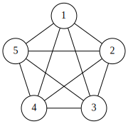
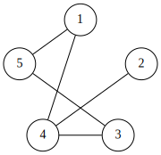

1 Introduction
This chapter introduces the basic ideas in graph theory that we will need in the rest of the book. If there is one required chapter, is this one. Even if you are already familiar with the basic notions of graph theory, I recommend you read this chapter. Not only as a refresher, but also because we will refer to these concepts over and over using the notation defined here, which may differ a bit from other traditional textbooks.
What is a graph
Intuitively, a graph is just a (finite) collection of elements called vertices (or sometimes nodes), connected via edges. Graph represents an abstract relation space, in which the edges define who’s related to whom, whatever the nature of that relation is.
Mathematically speaking, a graph is an object composed of two sets: one for the vertices, and another for the edges. In fact, edges themselves are sets of two vertices. There is nothing about an edge that matters beyond which are the two vertices it connects. (We will see this isn’t the case for some special classes of graphs, but we’ll only deal with them later.)
Graphs are abstract objects, which we can visualize by drawing dots for vertices and lines for edges. An example of a simple graph is shown in Figure 1.1.
This graph is composed of 5 vertices (labeled as \(a, b, c, d, e\)) and 7 edges. Of course, there is nothing intrinsic to names or the exact location of the vertices in the drawing. Except in very concrete cases – such as when a graph represents a geometrical or geographical object – the layout of a graph is arbitrary, and the same graph can be represented in an infinite number of ways.
For instance, Figure 1.2 are two different representations of the very same graph.
Intersecting edges
The first representation on Figure 1.2 (a) is drawn without no edges intersecting each other, while Figure 1.2 (b) is not. Can we draw any graph without intersecting edges? This simple question leads us to the beautiful domain of planar graphs. We’ll deal this with much later. Let’s see first what graphs are!
Formalizing graphs \(\small(\Sigma)\)
Optional math sections
Sections with a \(\small(\Sigma)\) symbol are mathematical definitions or proofs that you can safely ignore if you don’t care about the formalization.
We are ready to use the tools of logic and set theory to formally define the concept of a graph in the language of mathematics.
(We’ll often use the notation \(V(G)\) and \(E(G)\) for clarity to indicate the source graph \(G\). This is useful when juggling with multiple graphs and subgraphs.)
Let’s unpack this definition. Take a look at Figure 1.1 one more time.
In the language of mathematics, this graph is defined by \(G = (V, E)\), where the vertices are defined by: \[V = \{ a, b, c, d, e \}\] and the edges are defined by: \[E = \{ (a, e), (a, b), (b, e), (b, c), (b, d), (c, d), (c, e), (d, e) \}\]
To prevent the unnecessary proliferation of commas and parentheses, we’ll often denote the edge \((u, v)\) with \(uv\). You can thank us later.
The most important characteristic of a vertex is its degree, which basically measures the number of edges between this vertex and any other in the graph. The degree of a vertex \(v\) is denoted by \(d(v)\). Thus, in our example, \(d(a) = 2\), because only the edges \(ab\) and \(ae\) connect \(a\) to another vertex. In contrast, the remaining vertices have degree \(3\).
We call the set of vertices adjacent to an arbitrary vertex \(v\) its neighborhood, denoted by \(N(v)\). Thus, the neighborhood of vertex \(c\) is the set of vertices \(\{ b, d, e \}\).
By definition, the degree of a vertex is the size of its neighborhood; that is, \(d(v) = |N(v)|\).
Programming with graphs \(\small[\lambda]\)
Optional coding sections
Sections with a \(\small[\lambda]\) symbol are related to coding, and you can safely ignore them if you don’t care about the programming part.
Computationally speaking, you can think of a graph as an abstract class (or an interface in languages that support that notion) that provides two key operations: listing all nodes, and determining if two nodes are connected.
In Python we can achieve this with an abstract class (using the abc module). Since nodes can be literally anything, from numbers to people to diseases, we use a generic type.
class Graph(Generic[T], ABC):
@abstractmethod
def nodes(self):
pass
@abstractmethod
def adjacent(self, x: T, y: T) -> bool:
pass
# ... rest of class GraphYou may be wondering, what if we want to modify the graph? While that makes total sense in some applications, since we want to use this graph abstraction as flexibly as possible. (E.g., as a read only interface to some external resource, such as the graph of your Twitter followers.) We don’t want to constrain ourselves to graphs that are stored in local memory or that can be modified. In any case, specific local implementations of this interface will certainly have methods to add or remove nodes or edges
Just from the previous definitions, we can already start implementing general methods in graphs, whatever their underlying implementation might be. For example, we can already find the neighborhood and the degree of any given vertex. (Albeit in an extremely slow manner.)
# class Graph(...)
# ...
def neighborhood(self, x: T):
for y in self.nodes():
if self.adjacent(x, y):
yield y
def degree(self, x: T) -> int:
return len(list(self.neighborhood(x)))
# ...This is admittedly the worst way to compute neighborhoods, but hey, at least it works. And it’s simple! “Simple first, optimized later” is our mantra for now.
In cases where we have nothing better, this method will do. We will see shortly that we can easily provide more efficient implementations for specific graph representations.
Computational representations of graphs
There are several computational representations of graphs, each with their advantages and limitations.
The most straightforward representation is called the adjacency list method, which references all neighbors of a given node in a structure associated to that node, such as an array. In Python, we can store a dictionary of nodes mapping to a set of their adjacent nodes. We use a set to store the adjacency information so we can answer as fast as possible whether two nodes are adjacent.
class AdjGraph(Graph[T]):
def __init__(self, *nodes, directed=False) -> None:
super().__init__()
self._links = {n: set() for n in nodes}
self._directed = directed
@property
def directed(self):
return self._directed
def nodes(self) -> list[T]:
return iter(self._links)
def adjacent(self, x: T, y: T) -> bool:
return y in self._links[x]
def neighborhood(self, x: T):
return iter(self._links[x])
def degree(self, x: T) -> int:
return len(self._links[x])
# ... rest of AdjGraphNote that this implementation allows computing the neighborhood much more directly. It also allows us to dynamically modify the graph by adding vertices and edges.
# class AdjGraph(...)
# ...
def add(self, *nodes: T):
for n in nodes:
if n in self._links:
return False
self._links[n] = set()
return self
def link(self, x: T, y: T):
if x == y:
raise ValueError("Self-links not allowed.")
self.add(x)
self.add(y)
self._links[x].add(y)
if not self._directed:
self._links[y].add(x)
return self
# ...Notice that we are quite flexible in our modification methods, i.e., we don’t complain if a vertex is already added, and we take care of adding new vertices in link if necessary. This makes it way easier to use our implementation to dynamically construct a graph without taking too much hassle verifying that we aren’t adding duplicated things, paying a minimal overhead in performance.
A bit of syntactic sugar
If you noticed that return self at the end of the link method, you may be wondering why is that line there. The reason is so can chain successive calls to link to quickly create custom graphs. For example:
g = AdjGraph(1,2,3,4).link(2,3).link(1,4)This pattern is often called a “fluent interface” and is very common in object-oriented design. It is not strictly necessary, but it’s a nice little syntactic sugar. We can treat ourselves sometimes, right?
There are a few other similar methods in AdjGraph that let you quickly build a graph, adding paths, cycles, and other common structures with a single function call, and using method chaining to combine multiple operations in a single line. We will use and explain them when we need them.
Another commonly used representation is the adjacency matrix method, in which we store a separate structure (like a bidimensional array) that explicitely marks which pairs of nodes are related. The main advantage of this representation is that there is a single place to query or modify for adjacency information. The main disadvantages are the extra wasted space, as the adjacency matrix contains a lot of zeros. (Unless we use a sparse matrix. But that’s for another lesson.) Another disadvantage is the added complexity in computing the neighborhood of a given node. This can be solved with using an extra adjacency list, which would nullify the main advantage of the adjacency matrix implementation.
For those reasons, we don’t really gain much with adjacency matrices, and thus we will mostly build on the basic AdjGraph implementation throughout the book. It provides a nice balance between flexibility and performance, although is neither the most flexible nor the most performant implementation possible. When we need to, we will devise other more appropriate implementations.
Common graphs
Throughout this book we will refer to several common graphs by name. These are graphs that appear over and over in proofs and examples, so it pays to enumerate them briefly here.


The complete graph \(K_n\) is the graph of \(n\) vertices and all possible edges. It is, by definition, the densest graph one can have with \(n\) vertices. Here is one example:
The path graph \(P_n\) is a graph composed of \(n\) vertices stitched together in sequence, hence it’s a “path”. (We will formalize this concept in the next chapter). Here is one example:
The cycle graph \(C_n\) is a closed-loop of \(n\) vertices. So, just like a path, but the first and last vertices are also adjacent. Here is one example:
The random uniform graph \(U(n,p)\) is a graph of \(n\) vertices, where each pair of vertices has a probability \(p \in [0,1]\) to exist. It is the simplest random graph one can conceive. Here is one example:
Other types of graphs
So far, we’ve been talking about undirected and unweighted graphs, called like this because there is no specific direction in each edge, and there is no cost associated to edges.
Thus, the edges \(ab\) and \(ba\) are exactly the same. It would redundant – and incorrect – to mention them both. And each edge is similarly “important”.
However, in some applications, we need a bit more information. Two specific types of graphs that pop up all the time are directed and weighted graphs, sometimes both in the same problem.
Directed graphs
In some applications it is interesting to give a direction to edges, and consider that \(ab\) is different from \(ba\). For example, in modeling transportation networks, sometimes you have single-direction routes. These are called directed graphs. Although they are essential in practical applications, the fundamental theory is almost identical to undirected graphs, so we will only mention them when there’s some relevant difference.
Here is an example of a directed graph:
Weighted graphs
In planning and routing in particular, edges often represent roads or general connections that involve some cost – either a distance, a price, or any other similar notion of cost. In these cases we use weighted graphs, where each edge has an associated number called a weight, and we can ask questions like what is the optimal path between two nodes (where the sum of the weights of the edges involved is smaller).
We will see more weighted graphs very soon.
Final remarks
Now that we have laid out the foundational theory, we are ready to move on to specific types of graphs and some concrete problems. In the upcoming chapters we will be looking at specific problems and both learn the necessary theory and design clever algorithms to solve them.